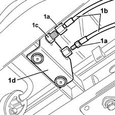
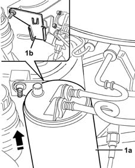
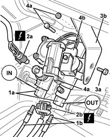

1043B42 pressure regulaton for gpl supply complete with delivery and return lines from intermediate connector r r
- Path
- Procedures > 10 ENGINE UNIT > 1043 LGP TANK AND PIPES > 1043B gpl fuel circuit pipes > 1043B42 pressure regulaton for gpl supply complete with delivery and return lines from intermediate connector r r
- Kind
- repair procedure (removal / refitting; the operation number is the code)
- Applies to
- engines: 1.6 16v; all production periods; only with equipment: GPOWER
- Interactive page
- https://sloeber94.github.io/elrnDB-fMltpl/en/#/2891506
Applies to: engines: 1.6 16v; all production periods; only with equipment: GPOWER and Euro 3
 Removing
Removing
 Refitting
RefittingDrain the LPG delivery and return lines from the tank to the pressure reglator. Follow the correct procedure and observe the regulations shown 1043A02 lpg system lines pipe draining operations .
Return the vehicle to the workshop and place it on a lift.
Disconnect the battery negative terminal.
1. Undo the connectors (1a) and disconnect the supply and return pipes (1b) from the connectors (1c) on intermediate bracket (1d).

Applies to: engines: 1.6 16v; all production periods; only with equipment: GPOWER and Euro 3
Release the pipes from the retaining bands.
1. Lift out activated carbon filter (1a) to release from mounting bracket (1b).
Place the activated carbon filter to one side to make the LPG pipes on the pressure regulator accessible.

Applies to: engines: 1.6 16v; all production periods; only with equipment: GPOWER and Euro 3
1. Undo the connectors (1a) and disconnect the supply and return pipes (1b) to the injectors.
2. Disconnect electrical connector of pressure sensor (2a) and LPG stop solenoid control coil (2b).
 | Name | Connector |
|---|---|---|
2a | GPL pressure sensor |
| Name | Connector |
|---|---|---|
2b | GPL cut out solenoid valve |
Place the electrical wiring to one side.
3. Undo bolts (3a) securing the pressure reglator to bracket (3b).
4. Undo retaining bolts (4a) and remove pressure regulator (4b) complete with pipes.

Applies to: engines: 1.6 16v; all production periods; only with equipment: GPOWER and Euro 3
Refitting
RemovingFit pressure regulator and secure with bolts.
Fit the mounting bracket and fix it using the bolts.
Connect the electrical connections of the LPG pressure sensor and stop coil.
| Name | Connector |
|---|---|---|
- | GPL pressure sensor |
| Name | Connector |
|---|---|---|
- | GPL cut out solenoid valve |
Fit the LPG delivery and return pipes to the injectors and tighten the connectors to torque.
 | Fastening | Component | Ø | Value (daNm) |
|---|---|---|---|---|
- | Connector | INJECTOR LPG SUPPLY PIPE./. | - | 1.4 |
| Fastening | Component | Ø | Value (daNm) |
|---|---|---|---|---|
- | Connector | INJECTOR REGULATOR LPG RETURN PIPE../ | - | 1.4 |
Fit the activated carbon filter on the bracket.
Connect the LPG delivery and return pipes to the connectors on the intermediate bracket and tighten the pipe connectors to torque.
| Fastening | Component | Ø | Value (daNm) |
|---|---|---|---|---|
- | Connector | L.P/G SUPPLY.RETURN PIPE CONNECTOR.. | - | (supply) 1.4 |
| Fastening | Component | Ø | Value (daNm) |
|---|---|---|---|---|
- | Connector | L.P/G SUPPLY.RETURN PIPE CONNECTOR.. | - | (return) 1.6 |
1043A04 gpl system and pipes check for leaks .
Connect the battery negative terminal.
Remove the vehicle from the ramp.
Topics linked from this page (4)
- 1043A02 lpg system lines pipe draining operations
- 1043A04 gpl system and pipes check for leaks
- K53 GPL pressure sensor
- L63 GPL cut out solenoid valve